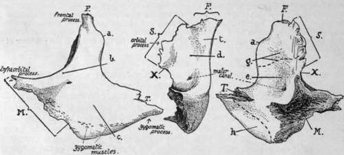

Malar
Description
This section is from the book "The Anatomy Of The Human Skeleton", by J. Ernest Frazer. Also available from Amazon: The anatomy of the human skeleton.
Malar
An irregular bone which forms the outer wall of the orbit, separating it from the temporal fossa, and rests on the maxilla below, making the prominence of the cheek : it sends a process backwards, articulating with the zygoma of the temporal to complete the arch. It thus can be described as possessing orbital, temporal and facial surfaces in addition to the articular areas. It can be considered as formed by the junction of two plates at an angle of about 70 degrees : the inner plate is curved to make a concave orbital surface ; the outer plate forms the facial prominence, and is prolonged back to meet the zygoma. The angle between the plates forms part of the temporal fossa above, but below and in front it rests on the maxilla.
The orbital surface is concave and has an outer vertical and a lower horizontal portion : the outer part completes the outer wall of the orbit and articulates above with the frontal and postero-internally by a serrated edge with the sphenoid ; the projection of this posterior edge is sometimes described as the orbital process. A small tubercle or process on the upper part of the orbital surface marks the attachment of the fascial band that acts as a check to the over-action of the outer Rectus, which is in relation with the surface. The horizontal portion forms part of the floor of the orbit, resting on the maxilla, and extends inwards as the infraorbital or maxillary process : it is in contact with the Inferior Oblique muscle, and the opening of the malar canal, for the temporo-malar nerve, is between it and the outer part. The inner border of the horizontal portion articulates with the maxilla, and is continuous with the inner sphenoidal border of the vertical part, but between the two articular areas is a small non-articular portion of the margin (X in Fig. 200) which closes the outer end of the spheno-maxillary fissure.
The facial surface is slightly convex, producing a malar prominence, owing to the backward inclination of its lower and outer part ; along its front border it is covered by the lip of the maxillary surface that receives the bone. The remainder of the surface is covered by fibres of Orbicularis palpebrarum, and, deep to this, gives origin to the two Zygomatici on the prominence.
A foramen on this surface transmits the malar division of the temporo-malar nerve.
The upper border forms a thick orbital margin at its junction with the orbital surface, and this margin is prolonged inwards on to the infraorbital process, making more than half of the lower margin of the orbit; it is prolonged up to meet the frontal bone at the frontal process. The front margin has already been noticed as articular : the lower or masseteric border is rounded and leads back.to the zygomatic or temporal process, which joins the zygoma by a rough surface, bevelled internally and directed obliquely upwards and forwards ; above this the posterior border gives attachment to the temporal fascia, and a strong band of this fascia is fastened to a prominent marginal or ■malar tubercle near the top (a in Fig. 200) of this border below the frontal process.
The temporal surface is the upper and outer part of the angle included between the two constituent plates of the bone, the lower and inner part being articular for the maxilla : the temporal surface is therefore deeply concave, with a front wall made by the orbital plate and a back or outer wall formed by the upper part of the facial plate, and below and behind this by the inner surface of the zygomatic portion of this plate. The surface aids in the formation of the temporal fossa : the Temporal muscle arises from the upper part of its front wall ; below this it is in relation with the muscle and a movable pad of fat, and here the temporal division of the temporo-malar nerve has its exit and lies between the bone and the muscle : the lower and back part of this surface is in contact with Temporal muscle, and its lower portion gives origin to the front fibres of Masseter : this muscle arises only from the deep aspect of the zygomatic part and from the lower margin, not at all from the outer surface.
Fig. 200.-Left malar bone. Left figure, from the front: central figure, orbital aspect; right figure, posterior aspect. Articulating areas : with frontal ; M. with maxilla ; S. with sphenoid ; T. with temporal; a. malar tubercle ; 6. orbital margin ; c. facial surface covered by Orbicularis ; d. orbital surface ; e. temporal surface ; g. origin of Temporal muscle ; h. origin of Masseter ; A', non-articular border forming outer end of sphenomaxillary fissure ; /. tubercle for attachment of " check ligament " of Rectus externus.
The malar canals or foramina vary in number ; there may be a common opening for the temporo-malar nerve with a double exit, or the nerve may enter the bone in two divisions, thus making four openings instead of three.
Development
A bony centre appears in membrane outside and below the level of the eye at the end of the second month, and from this the ossification extends upwards and inwards, forwards and backwards. It is doubtful whether other centres are normally present, although they have certainly existed where the bone is found divided,* as is sometimes the case : possibly, however, a centre for the lower margin may be a normal occurrence.
The growing bone comes quickly into contact with the maxillary and temporal bones, but it does not reach the frontal until later. At birth the temporal surface has the appearance of a plate of bone applied to the remainder.
Continue to:
- prev: Nasal Bone. Part 4
- Table of Contents
- next: The Orbit